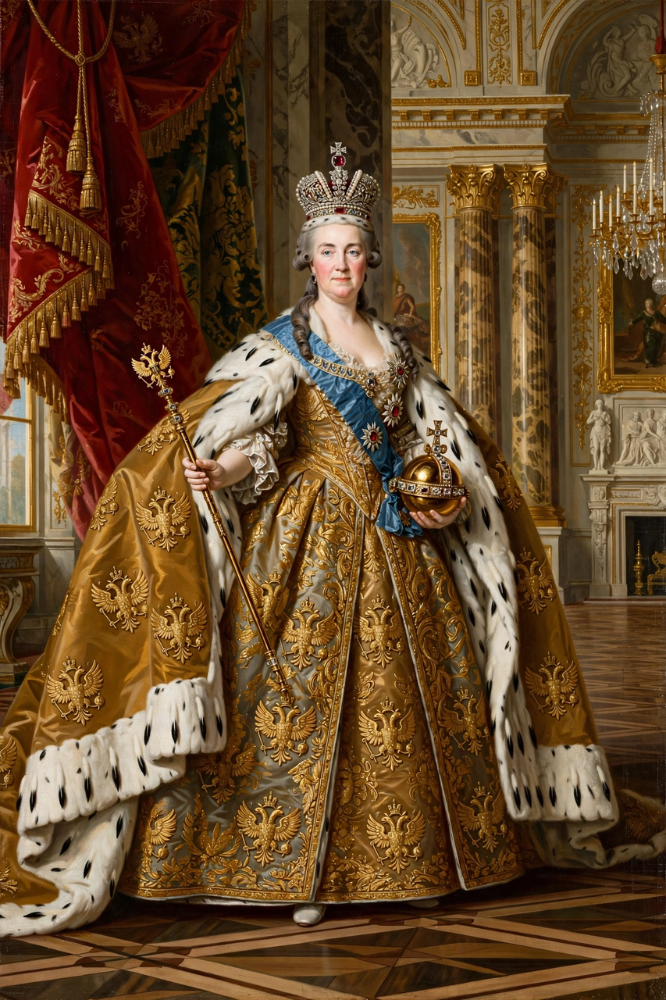

Catherine II (born Princess Sophie of Anhalt-Zerbst; 2 May 1729 – 17 November 1796), commonly known as Catherine the Great, was Empress of Russia from 1762 to 1796, the country's longest- ruling female leader. She came to power after overthrowing her husband, Peter III, and presided over a golden age of the Russian Empire: its territory expanded into Crimea, the Black Sea coast and Poland, while at home she corresponded with Voltaire and Diderot, founded schools and hospitals, and patronised the arts at the Hermitage — even as serfdom tightened its grip.
| Catherine the Great | |
|---|---|
| Reign | 9 July 1762 – 17 November 1796 |
| Born | 2 May 1729, Stettin, Prussia (now Szczecin, Poland) |
| Died | 17 November 1796, Saint Petersburg |
| Spouse | Peter III of Russia (m. 1745; d. 1762) |
| Successor | Paul I |
| House | Ascania (by birth); Holstein-Gottorp-Romanov (by marriage) |
Sophie, a minor German princess, arrived in Russia in 1744 as the bride of the heir, Grand Duke Peter. She converted to Orthodoxy as Catherine, mastered Russian, and cultivated the guards and the court while her marriage collapsed. In June–July 1762, with the support of her favourite Grigory Orlov and the Guards regiments, she deposed Peter III, who died days later in custody — probably murdered. She was crowned in Moscow in September 1762.
Catherine styled herself an enlightened monarch: her Nakaz (Instruction) of 1767 drew on Montesquieu and Beccaria, and she summoned a Legislative Commission to consider a new code — though it was dissolved without result. She secularised church lands, reformed provincial government (1775), issued charters to the nobility and towns (1785), founded the Smolny Institute for girls and hundreds of schools, promoted smallpox inoculation by example, and built the Hermitage collection into one of Europe's greatest. Yet the Pugachev Rebellion (1773–75), a vast Cossack and peasant rising, pushed her toward reaction; serfdom was extended into Ukraine and its burdens grew heavier.
Two wars with the Ottoman Empire (1768–74 and 1787–92) won Russia the northern Black Sea coast and, in 1783, the annexation of Crimea — the work of her favourite and statesman Grigory Potemkin, who founded cities such as Odessa and Sevastopol. In the west, three Partitions of Poland (1772, 1793, 1795), shared with Prussia and Austria, erased Poland from the map and brought Russia's frontier deep into Europe.

[ IMAGE: State portrait of Catherine II in coronation robes with crown and orb, after the portraits of the 1760s–70s. ]Catherine II, Empress of Russia 1762–1796Catherine died of a stroke in November 1796 and was succeeded by her estranged son Paul I. Her reputation has oscillated between enlightened reformer and expansionist autocrat; her voluminous memoirs and correspondence keep her one of the most vividly documented rulers of the eighteenth century.
Peter the Great · Russian Empire · Saint Petersburg · Crimean War
Categories: Catherine the Great · Empresses of Russia · 18th-century women rulers